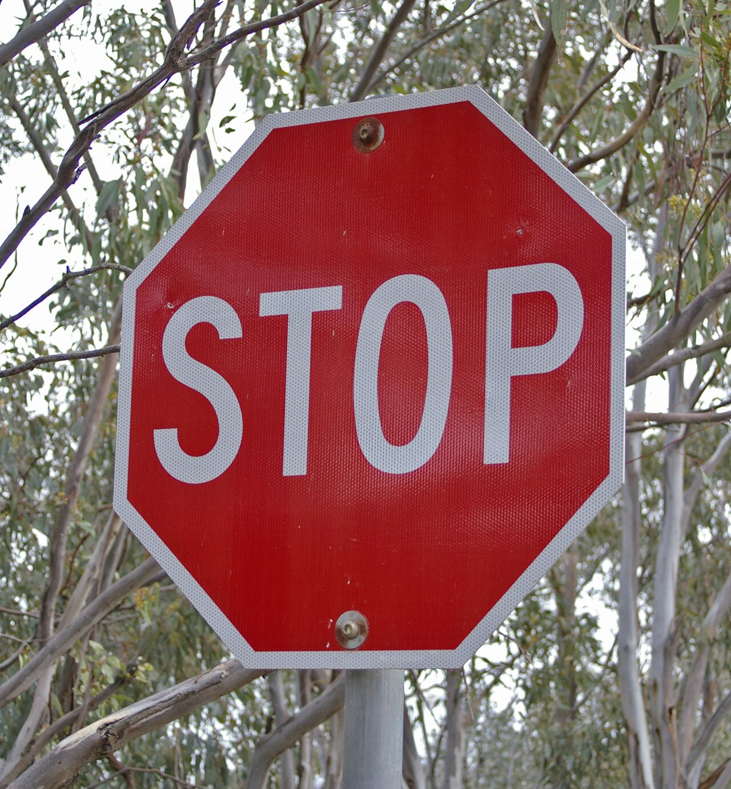
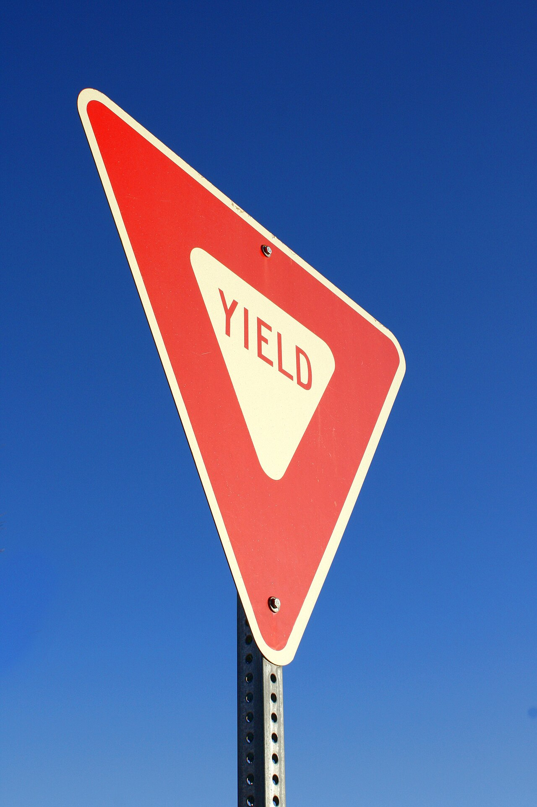
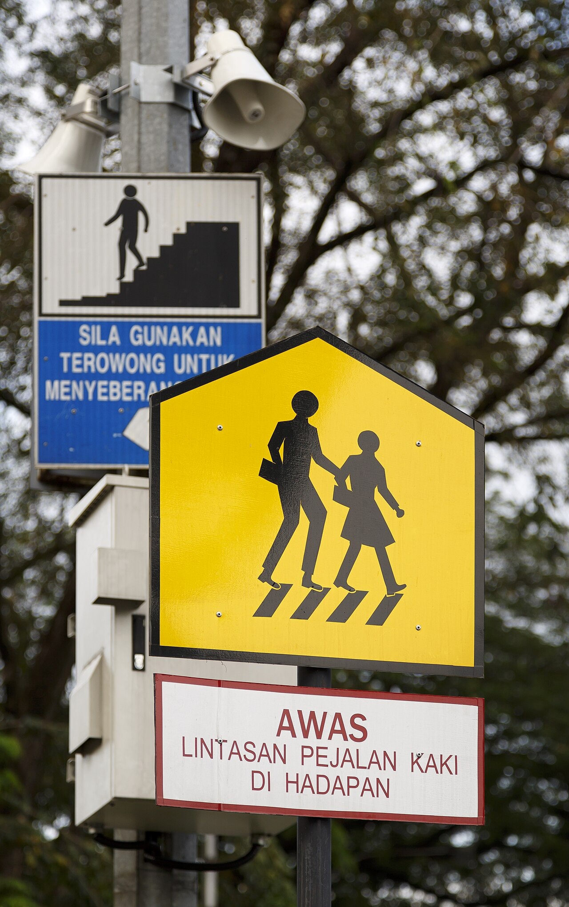

تعلّم بوضوح، قد بأمان
افهم الإشارة قبل أن
تصل إلى الطريق.
دليل بصري مبسّط يساعدك على تمييز إشارات المرور وفهم التصرف الصحيح عند رؤيتها، مع صور واقعية من الطريق.

صورة حقيقية من الطريق
ثم انطلق
دليل سريع
الإشارة ليست لوناً فقط.
إنها قرار في لحظة.
اقرأ الشكل واللون أولاً، ثم اربطهما بالتصرف المناسب. يساعدك هذا الأسلوب على تذكّر الإشارات في مواقف القيادة الحقيقية، لا في الحفظ النظري فقط.
المكتبة البصرية
إشارات المرور
تعرّف على الإشارات الأكثر شيوعاً من خلال صور واقعية وشرح مختصر قابل للتطبيق.
لم نعثر على إشارة مطابقة
جرّب كلمة أقصر مثل «توقف» أو «سرعة»، أو أعد ضبط المرشحات.

قاعدة لا تتغير
خفّف السرعة
حين لا تكون متأكداً.
الإشارة التحذيرية تمنحك معلومة مسبقة، لكنها لا تلغي ضرورة مراقبة الطريق. اترك مسافة أمان، خفّف السرعة تدريجياً، وكن مستعداً للتوقف.
اختبر نفسك
هل تميّز الإشارة
من أول نظرة؟
سؤال واحد سريع يساعدك على تثبيت ما تعلمته.
ماذا تفعل عند رؤية إشارة التوقف؟
شفافية المصادر
صور واقعية، بإسناد واضح.
تم اختيار الصور من Wikimedia Commons، مع حفظ بيانات المؤلف والترخيص وروابط الملفات الأصلية.